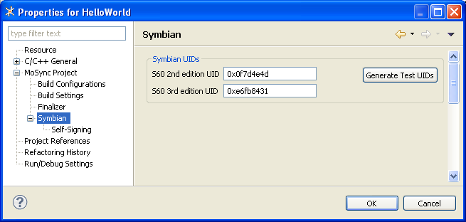
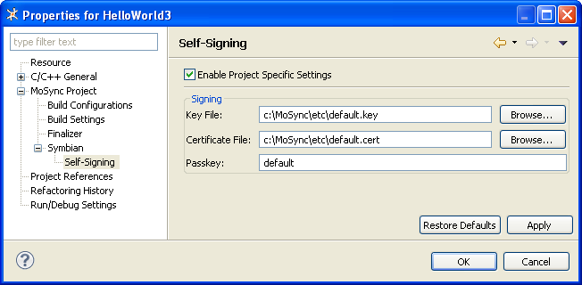

When you package an application for a Symbian device, you need to specify a UID for the package. MoSync can generate test UIDs for you to use during development. Optionally, can also self-sign your packages by specifying a key file and certificate. Here we describe how to set UIDs and do self-signing.
Symbian requires that each application has a UID to uniquely identify it.
When you create a project, MoSync automatically generates random UIDs for you within the range reserved by the Symbian Foundation for development and testing use. There are different ranges of these reserved UIDs in different editions of Symbian.
To view or change the current UIDs for an application, right-click on your project in the Project Explorer view, and select Properties > MoSync Project > Symbian.

If you need to, you can generate new random UIDs in the reserved range by clicking the Generate Test UIDs button.
These UIDs are intended just for use while you are doing development on your own machine. When you application is ready for public distribution, you will need to enter, in these boxes, UIDs provided by the Symbian Foundation for your application. Visit www.symbiansigned.com for more information.
To install Symbian applications on 3rd and 5th edition devices, they must be signed. MoSync generates a default private key file and certificate for self-signing.
If you wish to use your own key file and certificate to sign a particular application, right-click on your project in the Project Explorer view, and select Properties > MoSync Project > Symbian > Self-Signing.

(The default key file and certificate for all projects is shown in this screenshot.)
Tick the Enable Project Specific Settings checkbox. Enter the paths to your key file and certificate. In the Passkey field, enter the password for the key file. Click Apply.
The MoSync SDK includes OpenSSL which you can use to generated private key files and certificates. OpenSSL can be found in the MoSync /bin folder. Visit www.openssl.org for more information.
For known issues and limitations with our Symbian implementation, see our Issue Tracker.